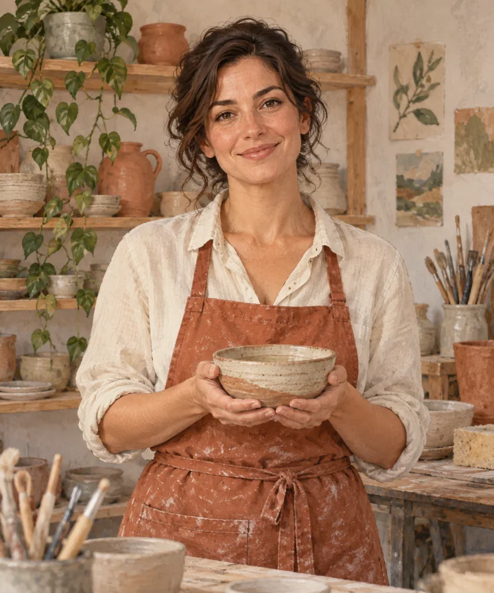
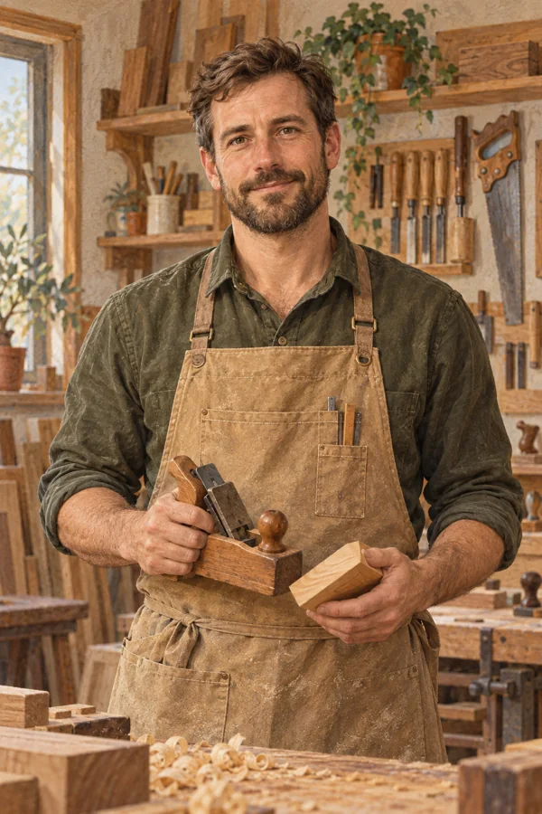

Мастер-классы по керамике, живописи и работе с деревом.
Анна Лебедева · Для начинающих
Мария Волкова · Для начинающих
Илья Соколов · Для начинающих
От первого комочка до любимой чашки.
Найдите свой цвет и свободный жест.
Тёплое дерево, точность и удовольствие.
Анна Лебедева · 2 часа
Мария Волкова · 3 часа
Илья Соколов · 3 часа

Керамика и ручная лепка
Живопись и композиция

Работа с деревом
Знакомство с материалами и пробные занятия. Вход свободный.
Сертификат на любое занятие.
 Керамика
Керамика